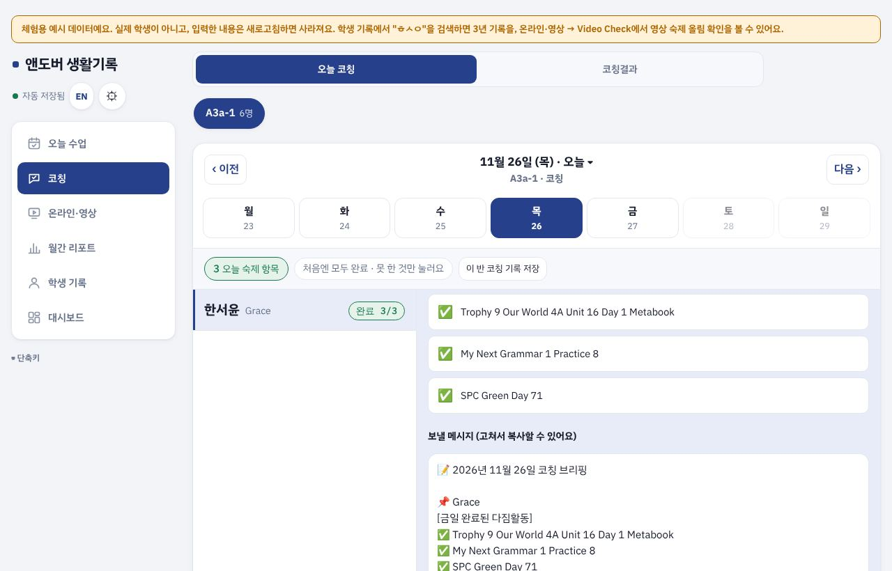
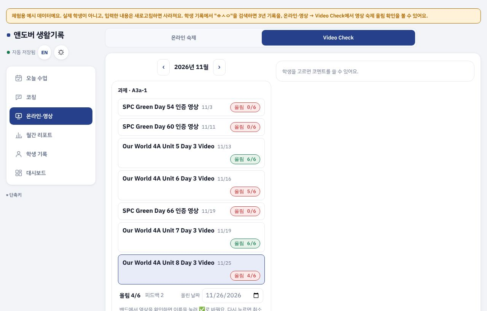
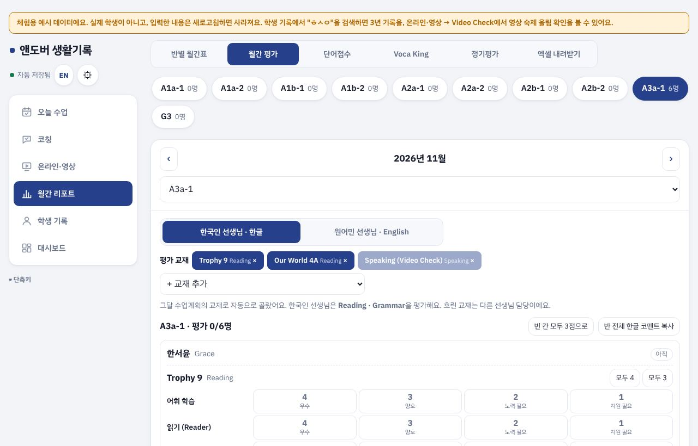
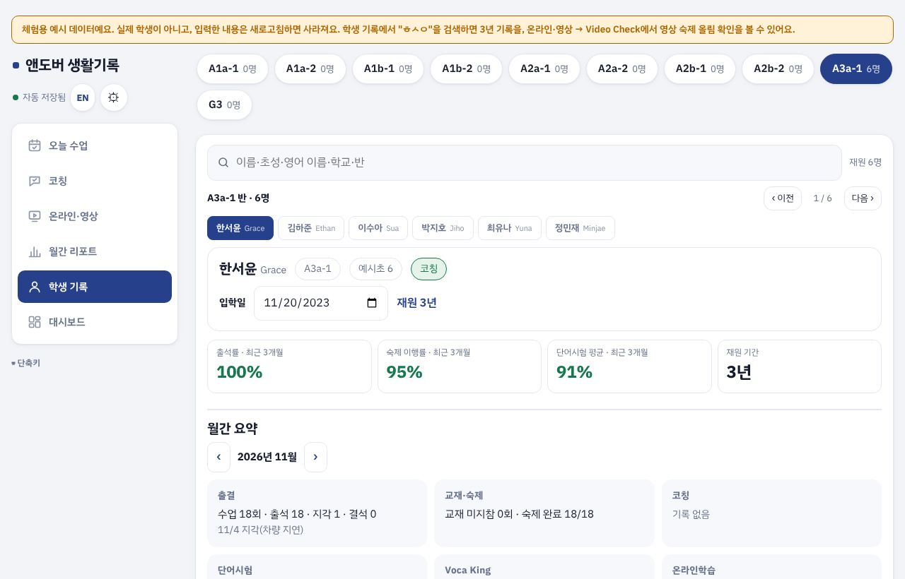
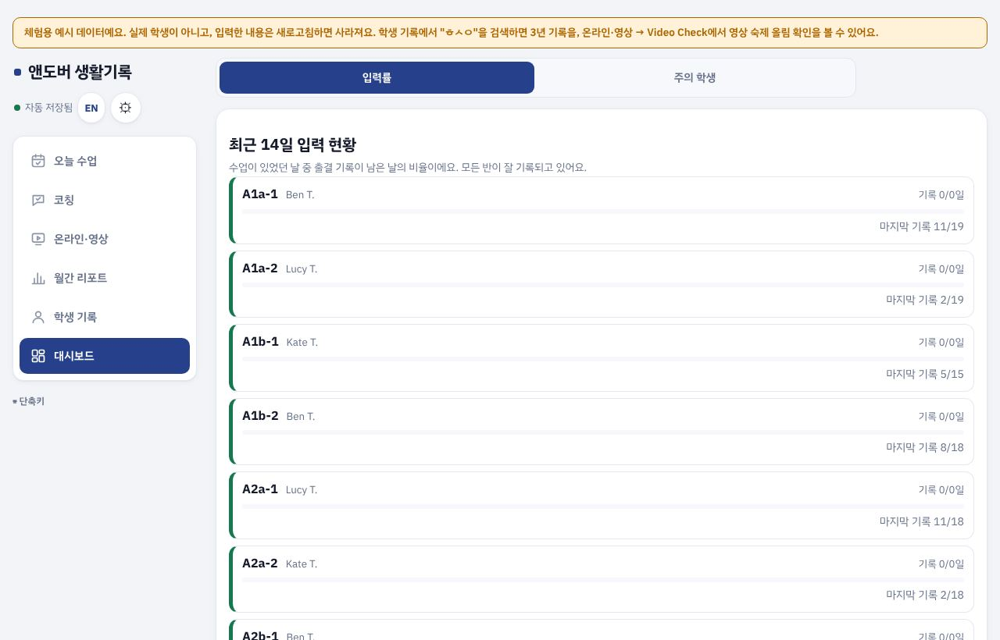

앤도버 선생님용 · 2026년 11월
앤도버 생활기록 사용 가이드
출결, 수업 기록, 코칭, 영상 숙제, 월간 평가를 한 프로그램에서 입력합니다. 학원 와이파이에 연결된 휴대폰이나 PC에서 아래 주소로 들어오세요.
처음 접속하기
http://192.168.0.15:8080
열기
- 휴대폰이나 PC를 학원 와이파이에 연결합니다. (데이터·집 와이파이에서는 열리지 않아요)
- 위 주소를 열면 바로 시작 화면이 나옵니다. 비밀번호는 없어요.
- 휴대폰은 공유 → 홈 화면에 추가를 해 두면 다음부터 앱처럼 바로 열립니다.
- 원어민 선생님은 오른쪽 위 EN 버튼을 누르면 영어 화면이 됩니다.
입력하는 즉시 자동 저장됩니다. 저장 버튼을 따로 누를 필요가 없고, 다른 선생님 입력도 바로 보입니다.
하루 순서
수업 전
오늘 수업에서 내 반을 누르고 오늘 수업계획을 확인합니다. 담당 선생님을 선택해 두세요.
수업 중
출결을 체크하고, 단어시험 점수와 수업 기록을 입력합니다.
수업 후
코칭에서 숙제 확인 → 못 한 항목만 누르기 → 메시지 복사해서 보내기. 온라인·영상에서 온라인 숙제와 Video 숙제 올림을 체크합니다.
퇴근 전
대시보드 → 입력률에서 내 반에 빈 곳이 없는지 확인합니다.
화면별 사용법
아래 사진은 가상 학생(한서윤 Grace)으로 찍은 예시입니다.
오늘 수업

- 위쪽 반 버튼으로 반을 고르고, 날짜 줄에서 다른 날로 이동합니다.
- 수업계획은 Annie가 올린 엑셀에서 자동으로 들어옵니다.
- 휴강·보강은 설정의 휴강·보강에서 관리합니다.
- 맨 아래 단어시험: 오늘 본 시험 종류(예: 교재 단어, Dictation)를 누르고 만점과 점수를 넣어요. 하루에 두 종류도 따로 넣을 수 있어요.
- 첫 점수가 70% 미만이면 빨간 숫자로 표시돼요. 재시험 점수는 옆 재시험 칸에 넣어요. 평균과 그래프에는 첫 점수만 들어가요.
코칭

- 숙제 항목은 수업계획에서 자동으로 만들어집니다. Metabook은 Unit·Day까지, Video 숙제와 SPC 인증 영상도 함께 들어가요.
- 처음엔 모두 완료 상태예요. 못 한 것만 눌러 바꾸면 됩니다.
- 아래 보낼 메시지를 고쳐서 복사해 보내고, 이 반 코칭 기록 저장을 누릅니다.
온라인·영상 → Video Check

- 밴드에 영상 숙제를 올린 학생을 누르면 올린 날짜가 함께 기록됩니다.
- 안 올린 학생은 개인 메시지를 복사해서 보내세요.
- 온라인 숙제 탭에서는 Trophy 9 등 사이트별 완료 여부를 체크합니다. Trophy 9 항목은 그날 Day에 맞는 레슨으로 자동으로 바뀝니다.
월간 리포트 → 월간 평가 매달

- 맨 위에서 한국인 선생님 · 한글 또는 원어민 선생님 · English를 고릅니다.
- 한국인 선생님은 Reading(Trophy 9 포함) · Grammar, 원어민 선생님은 Reading · Writing · Speaking을 평가합니다. 흐린 교재는 다른 선생님 담당이에요.
- 영역마다 1~4점을 누르면 코멘트가 자동으로 써집니다. 4 우수 · 3 양호 · 2 노력 필요 · 1 지원 필요.
- 특이사항은 매달, 선생님 관찰 · 다음 목표는 정기평가 달(4월·10월)에만 적습니다.
- 교재는 그달 수업계획에서 자동으로 골라집니다. 빼려면 ×, 더하려면 + 교재 추가.
학생 기록

- 이름 초성만 쳐도 찾습니다. 예: 한서윤 → ㅎㅅㅇ, 영어 이름도 됩니다.
- 달별 출결·숙제·단어시험·Voca King·월간 평가와 레벨·반 이력을 한 번에 봅니다.
- 상담 전에 이 화면을 열어 두면 편해요.
대시보드

- 입력률: 반별로 빠진 입력이 있는지 봅니다.
- 주의 학생: 결석·숙제 미완료가 잦은 학생이 모입니다.
휴대폰에서는


메뉴가 화면 아래쪽에 있어요. 기능은 PC와 똑같습니다.
주간·월간 할 일
| 언제 | 할 일 | 어디서 |
|---|---|---|
| 매주 | 단어시험 점수 빠진 곳 확인 | 월간 리포트 → 단어점수 |
| 매달 Voca King 후 | Voca King 점수 입력 | 월간 리포트 → Voca King |
| 매달 말 | 월간 평가 점수 + 특이사항 입력 | 월간 리포트 → 월간 평가 |
| 4월 · 10월 | 정기평가 점수, 관찰 · 다음 목표 입력 | 월간 리포트 → 정기평가 · 월간 평가 |
| 필요할 때 | 엑셀로 받기 | 월간 리포트 → 엑셀 내려받기 |
이럴 땐 이렇게
| 증상 | 해결 |
|---|---|
| 주소가 안 열려요 | 학원 와이파이에 연결됐는지 확인하세요. 그래도 안 되면 Annie께 학원 컴퓨터가 켜져 있는지 여쭤 주세요. |
| 오늘 수업계획이 비어 있어요 | 그 반 수업계획 엑셀이 아직 안 올라간 경우예요. Annie께 알려 주세요. |
| 다른 선생님 입력이 안 보여요 | 화면을 아래로 당겨 새로고침하세요. |
| 잘못 입력했어요 | 다시 고치면 덮어써집니다. 지운 기록은 Annie가 백업에서 되살릴 수 있어요. |
꼭 지켜 주세요
- 학원 컴퓨터의 검은 창(프로그램)을 끄지 마세요. 끄면 모두 접속이 끊깁니다.
- 학생 기록 화면을 학원 밖 사람에게 보여 주거나 캡처해 보내지 마세요.
- 설정(톱니바퀴) 메뉴는 Annie와 담당 선생님만 바꿔 주세요.